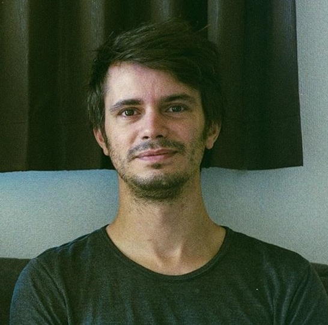

Riccardo IACOBUCCI, PhD

iacobucci (dot) riccardo (at) gmail (dot) com
Linkedin: www.linkedin.com/in/iacobucci-riccardo
Google Scholar: scholar.google.com/citations?user=eLH0mIIAAAAJ
Publons: publons.com/researcher/2922431/riccardo-iacobucci
Github: github.com/qwjhvbxi
Renewable energy grid integration, Smart grid, Optimization algorithms, Transport and energy integration
Research interests
My research interests are mainly in developing simulation and optimization models of energy
systems, especially related to transport and power grid integration.
I am interested in the application of advanced simulation and optimization methods and
machine learning to problems in the context of the smart grid, renewable energy integration,
electrified transportation, and related topics.
Work
Jan 2022–present
Principal Data and Energy Scientist
Tensor Energy
Japan (remote)
Development of prediction and control algorithms for renewable energy assets
Nov 2019–Oct 2021
JSPS Postdoctoral Fellow
Kyoto University
Kyoto, Japan
Intelligent Transport Systems (ITS) Laboratory,
Graduate School of Engineering
Research on shared transportation and energy integration
Jan 2019–Oct 2019
Postdoctoral Researcher
National Research Council of Italy (CNR) - Institute of Informatics and Telematics (IIT)
Pisa, Italy
Optimization algorithms for smart transportation and transport energy integration
Oct 2014–Mar 2015
Research and Development Internship
Loccioni group
Ancona, Italy
Simulation of storage systems, optimization and control algorithms for micro grids
Education
Apr 2015–Sep 2018
PhD in Energy Science
Kyoto University
Kyoto, Japan
Research on Energy Systems modeling and simulation, advanced mobility system integration with the power grid.
Final thesis: Shared autonomous electric vehicles potential for power grid integration
Winner of the Japanese Government (MEXT) Research Scholarship
Oct 2011–Jul 2014
Master of Science in Energy Engineering
Politecnico di Milano
Milan, Italy
Exchange semester in the Korea Advanced Institute of Science and Technology (KAIST) in Daejeon, South Korea, September 2012–January 2013
Research Internship at the Hong Kong University of Science and Technology (HKUST), Hong Kong, November 2013–April 2014
Final thesis: Investigation of new materials for solid oxide fuel cell cathodes
Sep 2008–Sep 2011
Bachelor in Mechanical Engineering
Politecnico di Milano
Milan, Italy
Peer reviewed publications
[*] denotes corresponding author
International journals
- Modal shift induced by shared autonomous vehicles: a large-scale simulation using mobility survey data
R.Iacobucci, J.Donhauser, J.D.Schmöcker, M.Pruckner. Journal of Intelligent Transportation Systems
(accepted)
- Exploring the profitability of using electric bus fleets for transport and power grid services
F.Fei, W.Sun, R.Iacobucci, J.D.Schmöcker.
Transportation Research Part C: Emerging Technologies, vol. 149, April 2023.
doi:10.1016/j.trc.2023.104060
- A Multi-stage Optimisation Approach to Design Relocation Strategies in One-way Car-sharing Systems with Stackable Cars
R.Iacobucci, R.Bruno, C.Boldrini.
IEEE Transactions on Intelligent Transportation Systems, vol. 23 (10), pages 17048-17061, April 2022
doi:10.1109/TITS.2022.3164989
- An integrated optimisation-simulation framework for scalable smart charging and relocation of shared autonomous electric vehicles
R.Iacobucci*, R.Bruno, J.D.Schmöcker. Energies, vol. 14, no. 12, p. 3633, June 2021. doi:10.3390/en14123633
- Automatic Classification of Screen Gaze and Dialogue in Doctor-Patient-Computer Interactions: Computational Ethnography Algorithm Development and Validation
S.Helou*, V.Abou-Khalil, R.Iacobucci, E.El Helou, K.Kiyono. Journal of Medical Internet Research vol. 23 (5), e25218, May 2021
- Optimization of Shared Autonomous Electric Vehicles operations with charge scheduling and vehicle-to-grid
R.Iacobucci*, B.McLellan, T.Tezuka. Transportation Research Part C, vol. 100, pages 34-52, March 2019. doi:10.1016/j.trc.2019.01.011
- The Synergies of Shared Autonomous Electric Vehicles with Renewable Energy in a Virtual Power Plant and Microgrid
R.Iacobucci*, B.McLellan, T.Tezuka. Energies, vol. 11, no. 8, p. 2016, August 2018. doi:10.3390/en11082016
- Modeling Shared Autonomous Electric Vehicles: potential for transport and power grid integration
R.Iacobucci*, B.McLellan, T.Tezuka. Energy, Volume 158, Pages 148-163, September 2018. doi:10.1016/j.energy.2018.06.024
International conferences
- A large scale simulation of the electrification effects of SAVs
R.Iacobucci, M.Pruckner, J.D.Schmöcker
6th Conference on Sustainable Urban Mobility (CSUM 2022), Skiathos Island, Greece, 2022
doi:10.1007/978-3-031-23721-8_9
- Simulation of Car-Sharing Pricing and Its Impacts on Public Transport: Kyoto Case Study
Y.Zhou, R.Iacobucci, J.D.Schmöcker, T.Yamada
12th International Scientific Conference on Mobility and Transport (2022)
doi:10.1007/978-981-19-8361-0_8
- Frequency Control Reserve Provision from a Fleet of Shared Autonomous Electric Vehicles
R.Iacobucci*, J. Donhauser, J.D.Schmöcker, M. Pruckner.
7th IEEE International Conference on Models and Technologies for Intelligent Transportation Systems (MT-ITS 2021)
doi:10.1109/MT-ITS49943.2021.9529321
- Dynamic pricing for ride-hailing services considering relocation and mode choice
R.Iacobucci*, J.D.Schmöcker. 7th IEEE International Conference on Models and Technologies for Intelligent Transportation Systems (MT-ITS 2021) doi:10.1109/MT-ITS49943.2021.9529301
- Investigating the Impact of Ride-sharing on the Performance of One-way Car-sharing Systems
R.Iacobucci, R.Bruno*, J.D.Schmöcker. 23rd IEEE International Conference on Intelligent Transportation Systems (IEEE ITSC 2020), Rhodes, Greece, 2020. doi:10.1109/ITSC45102.2020.9294533
- Cascaded Model Predictive Control for Shared Autonomous Electric Vehicles Systems with V2G Capabilities
R.Iacobucci, R.Bruno. 10th IEEE International Conference on Communications, Control, and Computing Technologies for Smart Grids (SmartGridComm 2019), Beijing, 2019. doi:10.1109/SmartGridComm.2019.8909735
- Model Predictive Control of a Shared Autonomous Electric Vehicles system with charge scheduling and electricity price response
R.Iacobucci*, B.McLellan, T.Tezuka. 3rd International Conference on Intelligent Transportation Engineering (ICITE), 110–14. Singapore, 2018. doi:10.1109/ICITE.2018.8492676
- Costs and carbon emissions of shared autonomous electric vehicles in a Virtual Power Plant and Microgrid with renewable energy
R.Iacobucci*, B.McLellan, T.Tezuka. 5th International Conference on Power and Energy Systems Engineering (Nagoya, September 2018), Energy Procedia, vol. 156, pages 401-405, January 2019. doi:10.1016/j.egypro.2018.11.104
Other research contributions
- Scalable charging optimization for Shared Autonomous Electric Vehicles with dynamic electricity pricing
R.Iacobucci, J.D.Schmöcker. Japan Society for Energy and Resources 39th Conference, Osaka, July 2020
- Future sustainable transport and energy sectors and their synergies
R.Iacobucci, B.McLellan, T.Tezuka. Japan Society for Energy and Resources 39th Conference, Osaka, July 2020
- Shared autonomous electric vehicles potential for power grid integration
R.Iacobucci. Doctoral thesis, 2018. doi:10.14989/doctor.k21385
- New method for evaluating Shared Autonomous Electric Vehicles Storage Performance in the power network with Intermittent Renewable Energy
R.Iacobucci, B.McLellan, T.Tezuka. Japan Society for Energy and Resources 34th Conference, Tokyo, January 2018
- Shared Autonomous Electric Vehicles as operating reserve: A case study in Tokyo
R.Iacobucci, B.McLellan, T.Tezuka. Japan Society for Energy and Resources 33rd Conference, Tokyo, February 2017
- Shared Autonomous Electric Vehicles as operating reserve
R.Iacobucci, B.McLellan, T.Tezuka. Kyoto-Ajou-Zhejiang Joint Symposium on Energy Science, Kyoto, January 2017
- Technology options towards a clean and sustainable road transport system in Japan by 2030
R.Iacobucci, W.Kusumaningdyah, N.Kaerkitcha, H.Lin, N.Luangchosiri, R.Motoori, K.Olaniyan, T.Sagawa, N.K.Ishihara. Poster presented at the 7th International Symposium of Advanced Energy Science, Kyoto, September 2016
- Investigation of new materials for solid oxide fuel cell cathodes
R.Iacobucci, F.Ciucci, S.Campanari. Master thesis, 2014. URI: http://hdl.handle.net/10589/93753
Other projects
Renewables sandbox
Open-source interactive simulation of electricity load balancing at a country level with a 100% renewable electricity system.
Awards
- Postdoctoral Fellowship from the Japan Society for the Promotion of Science (JSPS), 2019-2021
- Best Presentation at the International Conference on Power and Energy Systems Engineering (CPESE 2018)
- Best Presentation at the International Conference on Intelligent Transportation Engineering (ICITE 2018)
- Best Student Presentation Award from the Japan Society for Energy and Resources (JSER) (2018)
- Japanese Government (MEXT) Scholarship (2015-2018)
- "Thesis Abroad" Scholarship from Politecnico di Milano (2014)
Review work
Reviewer for international journals Applied Energy, Electronics, Energies, IEEE Access, IEEE Transactions on Vehicular Technology, Renewable and Sustainable Energy Reviews, Sustainability, Sustainable Cities and Society, Transportation Research Part C - Emerging Technologies, Transportation Research Part D - Transport and Environment, Transportmetrica A: Transport Science.
Reviewer for international conference Transportation Research Board Annual Meeting.
Languages
Italian–native speaker
English–fluent
Japanese–basic
Volunteering
Regular editor of Wikipedia in English since 2011.
Over 40,000 edits on Wikipedia, Wikimedia Commons, and Wikidata.
Autopatrolled editor, recognized as a trusted editor by the Wikipedia community.
Creator of over 100 new articles on the English Wikipedia and curator of over 1,000 articles on the topics of physics, engineering, transport, economics, and renewable energy.
Last update: